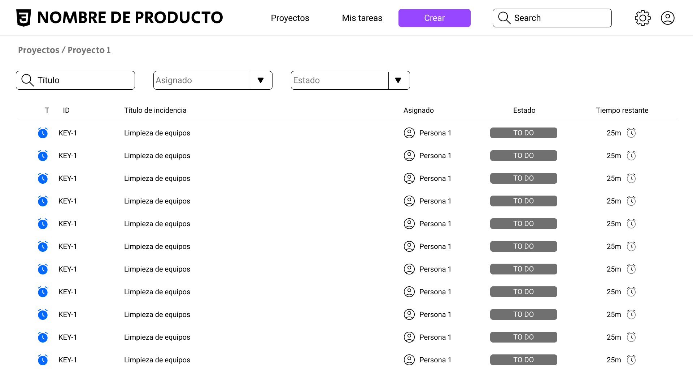

Introducción a [Nombre de la Herramienta]
Bienvenido a [Nombre de la Herramienta], la solución definitiva para la gestión eficiente de tickets. Nuestra herramienta está diseñada para simplificar y agilizar el proceso de seguimiento y resolución de incidencias, asegurando que ningún detalle se pase por alto. Con [Nombre de la Herramienta], puedes gestionar fácilmente las solicitudes de tus clientes, asignar tareas a tu equipo y monitorizar el progreso en tiempo real.
Funcionalidades Clave
- Asignación Automática: Distribuye tickets automáticamente según criterios predefinidos.
- Seguimiento en Tiempo Real: Monitorea el estado de cada ticket y recibe notificaciones instantáneas sobre actualizaciones.
- Historial Completo: Accede a un historial detallado de todas las interacciones y cambios realizados en cada ticket.
- Informes Personalizados: Genera informes detallados para analizar el rendimiento del equipo y la resolución de problemas.
Beneficios para tu Empresa
- Mejora la Eficiencia: Reduce el tiempo de resolución de problemas y optimiza la asignación de recursos.
- Aumenta la Satisfacción del Cliente: Proporciona una respuesta rápida y efectiva a las solicitudes y problemas de tus clientes.
- Facilita la Colaboración: Permite a tu equipo trabajar de manera más coordinada y comunicarse eficientemente.
- Decisiones Basadas en Datos: Utiliza los informes y análisis para tomar decisiones informadas y mejorar continuamente tus procesos.